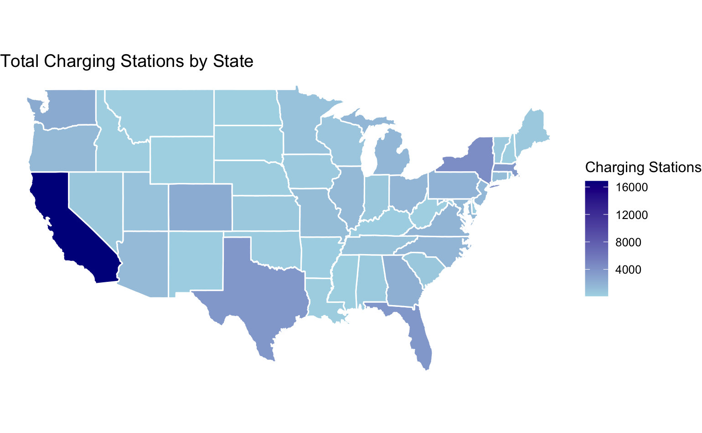
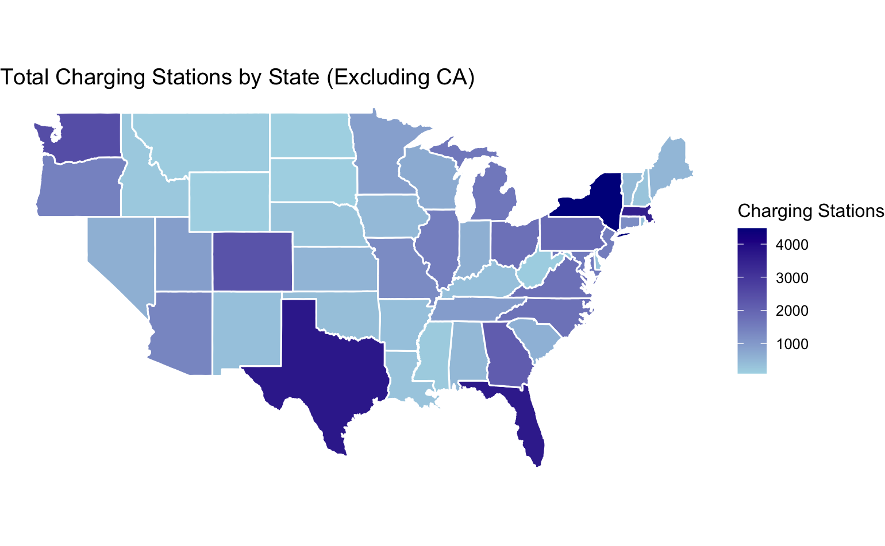
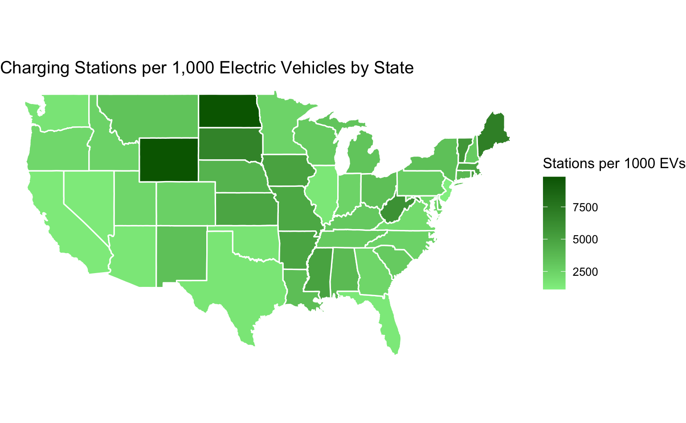
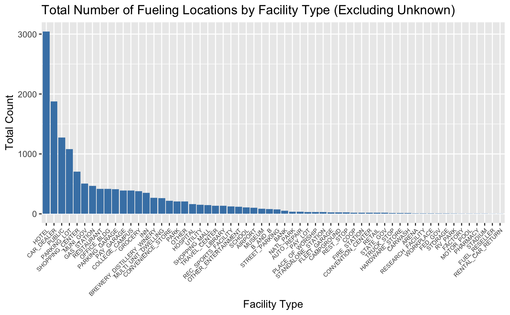
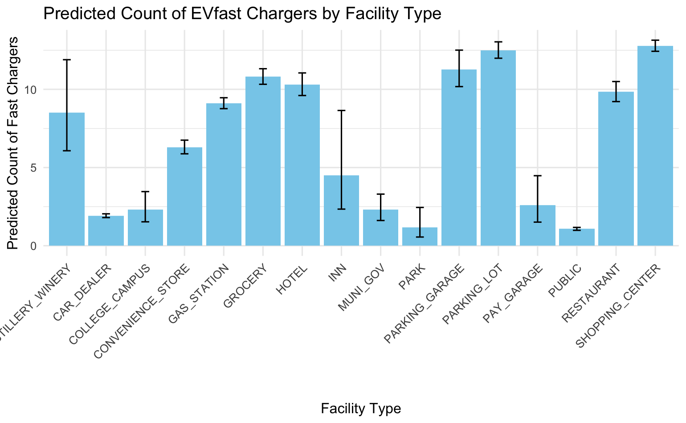

By Dan Pacheco
IST 687
Friday, Mar. 21, 2025
As interest in electric vehicles (EVs) grows, so does concern about charging infrastructure. And this is backed up by recent research. A recent Harvard study showed that drivers can successfully recharge their cars using non-residential EV equipment only 78% of the time. Potential buyers (myself included!) worry about where and how often they can charge on the road — especially when leaving urban areas. The most extreme example of this is planning a road trip. Unless every American plans to have a combusion-engine car for road trips and an electric car for city driving only, this is a problem that must be solved.
This project examines how EV charging is distributed across the U.S. and what kind of experience drivers can expect based on where they live or plan to travel. I used R Studio and the functions and processes I learned in IST 687: Introduction to Data Science to try to get a better picture of what the charging infrastructure across the United States is really like, and began building a Shiny App using Leaflet.js that could potentially help EV road-trippers plan their trips with more confidence. I was super exdited to learn that Leaflet is supported natively in R using a package! I have more about that in an Appendix at the end of this writeup.
The data for this project comes from the U.S. Department of Energy's Alternative Fueling Station Locator web site. This data set covers all types of alternative fuels including things like hydrogen fuel, but I wanted to focus only on electric vehicles. I was able to download a subset of 83,000+ records of EV charging stations nationwide, as well as in Canada and some U.S. territories. I filtered the dataset to focus solely on electric vehicle stations.
Because the Trump Administration has recently been haphazardly deleting federal data sets that it thinks are at odds with its preference for fossil fuel energy, I made a copy of this export in Google Sheets so that it will always be available (and available for my final project). I plan to later put all of this code as well as the data in a Github repository.
Other data sources include:
state.x77)maps packageI used the jsonlite library for importing the CSV, and the tidyverse library for subsetting and cleaning it to be in the formats I needed. I also renamed the column headers for the columns I planned to use.
A key point of cleaning is that I needed to remove Canadian provinces, the District of Columbia and Puerto Rico because the ggplot maps I'm using don't display those locations. I also wanted to compare only states to other state. However, I did copy the states data into its own US file, with a plan of eventually creating a subset of just Canada, and perhaps also a subset that is only the island of Puerto Rico so that I can do analyses of them individaully, and even compare them to U.S. states.
# Load libraries
library(tidyverse)
library(jsonlite)
# Load the raw dataset
fuelstations <- read.csv("altfuelstations.csv", header = FALSE)
# Rename relevant columns
colnames(fuelstations)[1] <- "FuelTypeCode"
colnames(fuelstations)[2] <- "StationName"
colnames(fuelstations)[5] <- "City"
colnames(fuelstations)[6] <- "StateAbbrev"
colnames(fuelstations)[25] <- "Latitude"
colnames(fuelstations)[26] <- "Longitude"
colnames(fuelstations)[33] <- "OpenDate"
colnames(fuelstations)[38] <- "ConnectorTypes"
colnames(fuelstations)[48] <- "FacilityType"
# Remove duplicate header row
fuelstations <- fuelstations[-1, ]
# Filter out non-U.S. entries
canadian_codes <- c("AB","BC","MB",...)
fuelstations_us <- fuelstations[!(fuelstations$StateAbbrev %in% canadian_codes), ]
fuelstations_us <- fuelstations_us %>% filter(StateAbbrev != "DC")My first map was showing the total number of stations across every state. I had to first count the number of fuel stations and tie those to state abbreviations. I then joined it with the map data so that I could use ggplot2.
# Count stations per state
state_counts <- fuelstations_us %>%
group_by(StateAbbrev) %>%
summarise(StationCount = n())
# Join with map data
state_data <- state_counts %>%
left_join(data.frame(StateAbbrev = state.abb, region = tolower(state.name)), by = "StateAbbrev")
map_data_final <- left_join(map_data("state"), state_data, by = "region")
# Plot
ggplot(map_data_final, aes(x = long, y = lat, group = group, fill = StationCount)) +
geom_polygon(color = "white") +
scale_fill_gradient(low = "lightblue", high = "darkblue") +
coord_fixed(1.3) +
theme_void() +
labs(title = "Total Charging Stations by State")The map above looks good, but unfortunately California is so far beyond every other state in its electric vehicle infrastructure, it makes it hard to compare the other states. So much as I love California, I decided to make a map that removes it so I could see how that looks:
This map lets you see more clearly how the other states compare. Texas, New York, Massachussetts and Florida are all on par numerically. States like Washington, Georgia, North and South Carolina, Colorado, Pennsylvania and Michigan make the middle tier. The rest are at the bottom. (But don't feel too big in your britches, mid-levels, because you are all still way way WAY behind California!)
map_data_no_ca <- map_data_final %>% filter(region != "california")
ggplot(map_data_no_ca, aes(x = long, y = lat, group = group, fill = StationCount)) +
geom_polygon(color = "white") +
coord_fixed(1.3) +
theme_void() +
labs(title = "Charging Stations by State (Excluding California)")As I thought more about what these numbers mean, the total number is not that useful because every state has differently sized populations. I decided to import a dataframe of state population size, then join that into the data of totals per state. This allowed me to show the total number of charging stations per 1,000 residents.
This led to some interesting insights. As compared to their populations, California, Washington, Oregon Utah, Colorado, Arizona, and Fermont are actually on par with each other. So California, you're not as far ahead of every state as you thought. And surprise: Nevada is ahead of everyone, including California!
new_state_population <- data.frame(region = tolower(rownames(state.x77)), Population = state.x77[,"Population"])
new_state_data <- state_data %>%
left_join(new_state_population, by = "region") %>%
mutate(StationsPer100k = (StationCount / Population) * 100000)
new_map_data_final <- left_join(map_data("state"), new_state_data, by = "region")
# Plot
ggplot(new_map_data_final, aes(x = long, y = lat, group = group, fill = StationsPer100k)) +
geom_polygon(color = "white") +
scale_fill_gradient(low = "darkred", high = "orange") +
coord_fixed(1.3) +
theme_void() +
labs(title = "Charging Stations per 100,000 Residents")All this made me think even more about the average experience of an electric car driver. Do you care how many charging stations there are as compared to the entire population? No, because you're competing for "pumps" with other electric car drivers. I think this is going to become a bigger and bigger issue as electric vehicles increase across the country due to how much longer it takes to charge your EV than it does a gas engine car.
To get at this question, I pulled in a dataset from the Department of Energy that shows the number of registered electric vehicles per state. This allowed me to make a dataframe that can be used to show charging stations per electric vehicle owners in each state.
What I got was this map. It shows a more even distribution across the country, with some outliers. At first I thought it showed that Wyoming and North Dakota are ahead of others, and they are. But their populations are also just really small compared to the other states. However, there could be some bigger story there so I flagged it for future investigation.
carsbystate <- read.csv("vehicle_registration.csv", header = FALSE)
colnames(carsbystate) <- c("region", "electricvehicle")
carsbystate$region <- tolower(carsbystate$region)
carsbystate$electricvehicle <- as.numeric(gsub(",", "", carsbystate$electricvehicle))
new_state_ev_data <- state_data %>%
left_join(carsbystate, by = "region") %>%
mutate(StationsPer1000EVs = (StationCount / electricvehicle) * 1000)
new_map_ev_data <- left_join(map_data("state"), new_state_ev_data, by = "region")
# Plot
ggplot(new_map_ev_data, aes(x = long, y = lat, group = group, fill = StationsPer1000EVs)) +
geom_polygon(color = "white") +
scale_fill_gradient(low = "lightgreen", high = "darkgreen") +
coord_fixed(1.3) +
theme_void() +
labs(title = "Charging Stations per 1,000 Electric Vehicles")Enough with maps. Now I was ready to do some histograms. The one that made the most sense to me was this: what types of facilities tend to have the most charging stations? To get at that, I used the tidyverse piping function to mutate / group facility types and basically sum them up.
What I found is that approximately 16 facility types were leaders in having charging station, with hotels, car dealers, and "public" locations have the most. I am slightly concerned about the "public" designiation because it may mean just unknown, but I need to do more research into that.
In a later step, I called out those 16 facility types to create an interactive map.
facility_summary <- fuelstations_us %>%
mutate(FacilityType = ifelse(FacilityType == "" | is.na(FacilityType), "Unknown", FacilityType)) %>%
group_by(FacilityType) %>%
summarise(Total = n()) %>%
arrange(desc(Total))
ggplot(facility_summary, aes(x = reorder(FacilityType, -Total), y = Total)) +
geom_bar(stat = "identity", fill = "steelblue") +
labs(title = "Charging Stations by Facility Type") +
theme(axis.text.x = element_text(angle = 45, hjust = 1))Our professor wanted us to use predictive modeling if possible in this project. I thought a lot about what I could predict with the data I had. At first I wanted to try to predict which states were likely to have more stations based on their open dates. But this proved to be too much work, and I couldn't figure it out.
Instead, I found a way that I think predicts what each of the 16 top facility types are likely to have FAST chargers, as the data set has counts for how many chargers of different speeds are available at each location.
What it shows is that Distilleries and Wineries, Gas stations, Grocery stores, Hotels, Parking garages, parking lots, restaurants and shopping centers are more likely to have fast chargers. This makes sense, as those locations want you around just long enough to perform your task with them, and then they want you on your way.
fuelstations_us$EVfast <- as.numeric(fuelstations_us$EVfast)
model_poisson <- glm(EVfast ~ FacilityType, data = fuelstations_us, family = "poisson")
summary(model_poisson)OK, so with all that out of the way, I started to get excited about what I could do to make these maps interactive. And I will admit: I had not idea, but I did know that Leaflet.js is used a lot by news organizations to make such maps.
So, I dedided to go ask a new model of ChatGPT (the o3-mini-high model which is good at reasoning and code) if it knew of ways to do this. I specifically asked it: Based on the data set I had and the types of fields in it, did it know if it could use Leaflet to make a road trip planner?
It did, and the video below shows what we made together. I had to do some more data munging but was really excited to see that most of the code was supported directly in Leaflet's R package.
One part I designed myself was importing the geocoordinates of common locations for the Traveling From and Traveling To fields. If I were to spend more time on this, I would figure out a way for someone to type in any city in those fields, but I think it would require using an API and even paying for some geocoding services.
Road trip planner
# Added an All for facility type, and default checked all types.
library(shiny)
library(leaflet)
library(dplyr)
library(stringr)
library(sf) # using sf as an alternative to geosphere
# Make facility types characters for the shiny app. Later we need to make them factor for histograms.
fuelstations_us$FacilityType <- as.character(fuelstations_us$FacilityType)
# Create the city_coords data frame directly in the code
city_coords <- data.frame(
city = c(
"Seattle, WA", "Denver, CO", "Los Angeles, CA", "San Diego, CA",
"Chicago, IL", "Las Vegas, NV", "Albuquerque, NM", "New Orleans, LA",
"Kansas City, KS", "Minneapolis, MN", "Miami, FL", "Orlando, FL",
"Atlanta, GA", "Washington, DC", "New York, NY", "Syracuse, NY",
"Honolulu, HI", "Key West, FL", "San Francisco, CA", "Nashville, TN",
"Charleston, SC", "Aspen, CO", "Sedona, AZ", "Palm Springs, CA",
"Myrtle Beach, SC", "Newport, RI",
"Boston, MA", "Portland, OR", "Austin, TX", "Savannah, GA",
"Scottsdale, AZ", "Lake Tahoe, CA", "San Antonio, TX", "Burlington, VT",
"Santa Fe, NM", "Fort Lauderdale, FL"
),
lat = c(
47.6062, 39.7392, 34.0522, 32.7157,
41.8781, 36.1699, 35.0844, 29.9511,
39.1141, 44.9778, 25.7617, 28.5383,
33.7490, 38.9072, 40.7128, 43.0481,
21.3069, 24.5551, 37.7749, 36.1627,
32.7765, 39.1911, 34.8697, 33.8303,
33.6891, 41.4901,
42.3601, 45.5152, 30.2672, 32.0809,
33.4942, 39.0968, 29.4241, 44.4759,
35.6870, 26.1224
),
lon = c(
-122.3321, -104.9903, -118.2437, -117.1611,
-87.6298, -115.1398, -106.6504, -90.0715,
-94.6275, -93.2650, -80.1918, -81.3792,
-84.3880, -77.0369, -74.0060, -76.1474,
-157.8583, -81.7800, -122.4194, -86.7816,
-79.9311, -106.8175, -111.7609, -116.5453,
-78.8867, -71.3128,
-71.0589, -122.6784, -97.7431, -81.0912,
-111.9261, -120.0324, -98.4936, -73.2121,
-105.9378, -80.1373
),
stringsAsFactors = FALSE
)
### Updated geocode function that looks up coordinates from city_coords
geocode <- function(address) {
match_row <- city_coords[city_coords$city == address, ]
if (nrow(match_row) > 0) {
return(c(lat = as.numeric(match_row$lat), lon = as.numeric(match_row$lon)))
} else {
# Default: approximate center of the US if address not found
return(c(lat = 39.8283, lon = -98.5795))
}
}
### Assume fuelstations_us is already loaded and cleaned, with required columns,
### including: Latitude, Longitude (numeric), FacilityType, ConnectorTypes, etc.
### Also assume that binary connector columns (e.g. "CHADEMO", "J1772", etc.) have been created.
unique_connectors <- c("CHADEMO", "J1772", "J1772COMBO", "TESLA", "NEMA515", "NEMA1450", "NEMA520")
ui <- fluidPage(
tags$head(
tags$style(HTML("
.well { margin-bottom: 15px; }
.help-text { font-size: 0.9em; color: #555; }
"))
),
titlePanel("Road Trip Planner for EV Charging & Fun Stops"),
sidebarLayout(
sidebarPanel(
wellPanel(
h4("Trip Settings"),
selectInput("origin", "Leaving from:",
choices = city_coords$city, selected = "New York, NY"),
selectInput("destination", "Driving to:",
choices = city_coords$city, selected = "Washington, DC")
),
wellPanel(
h4("Filter Options"),
selectInput("state", "State:",
choices = c("All", sort(unique(fuelstations_us$StateAbbrev))),
selected = "All"),
# Multi-select for Facility Type using selectizeInput with remove_button plugin
selectizeInput("facility", "Facility Type:",
choices = c("All", sort(unique(fuelstations_us$FacilityType))),
selected = "All", multiple = TRUE,
options = list(plugins = list("remove_button"))),
checkboxGroupInput("connectors", "Connector Types:",
choices = unique_connectors,
selected = unique_connectors) # all default checked
),
actionButton("plan", "Plan My Route"),
br(), br(),
helpText("Use the controls above to filter charging stations along your route.
The map will update with locations and available amenities.", class = "help-text")
),
mainPanel(
leafletOutput("map", height = 600)
)
)
)
server <- function(input, output, session) {
# Reactive subset based on filters
filteredData <- reactive({
data <- fuelstations_us
if (input$state != "All") {
data <- data %>% filter(StateAbbrev == input$state)
}
# If "All" is selected in facility, do not filter by facility type.
if (!("All" %in% input$facility)) {
data <- data %>% filter(FacilityType %in% input$facility)
}
if (!is.null(input$connectors) && length(input$connectors) > 0) {
data <- data %>% filter(if_any(all_of(input$connectors), ~ . == 1))
}
data
})
# Render the base Leaflet map
output$map <- renderLeaflet({
leaflet() %amp;%
addProviderTiles("CartoDB.Positron") %amp;%
setView(lng = -98.583, lat = 39.833, zoom = 4) # Center on the US
})
# Update map markers when filters change using marker clustering
observe({
data <- filteredData()
leafletProxy("map", data = data) %amp;gt;%
clearMarkers() %amp;gt;%
clearMarkerClusters() %amp;gt;% # Clear clusters before adding new ones
addMarkers(~Longitude, ~Latitude,
popup = ~paste("<strong>", StationName, "</strong><br/>",
StreetAddress, "<br/>",
City, ", ", StateAbbrev, "<br/>",
"Facility: ", FacilityType, "<br/>",
"Connectors: ", ConnectorTypes),
clusterOptions = markerClusterOptions()
)
})
observeEvent(input$plan, {
# Geocode the selected origin and destination
origin_coords <- geocode(input$origin)
destination_coords <- geocode(input$destination)
# Calculate a bounding box around the route with a 1-degree buffer
min_lat <- min(origin_coords["lat"], destination_coords["lat"]) - 1
max_lat <- max(origin_coords["lat"], destination_coords["lat"]) + 1
min_lon <- min(origin_coords["lon"], destination_coords["lon"]) - 1
max_lon <- max(origin_coords["lon"], destination_coords["lon"]) + 1
# First filter charging stations by facility type and bounding box
stops_data <- fuelstations_us %amp;%
filter(FacilityType %in% input$facility,
Latitude >= min_lat, Latitude <= max_lat,
Longitude >= min_lon, Longitude <= max_lon)
# Further filter by selected connector types using binary columns
if (!is.null(input$connectors) && length(input$connectors) > 0) {
stops_data <- stops_data %amp;% filter(if_any(all_of(input$connectors), ~ . == 1))
}
# Use sf to refine by selecting stations that are "near" the route
# Create a LINESTRING from origin to destination
line_coords <- matrix(c(origin_coords["lon"], origin_coords["lat"],
destination_coords["lon"], destination_coords["lat"]),
ncol = 2, byrow = TRUE)
route_line <- st_sfc(st_linestring(line_coords), crs = 4326)
# Convert stops_data to an sf object
stops_sf <- st_as_sf(stops_data, coords = c("Longitude", "Latitude"), crs = 4326)
# Compute distances (in meters) from each station to the route
distances <- st_distance(stops_sf, route_line)
# Set a threshold (e.g., 50 km = 50000 meters) and filter
threshold <- 50000
stops_data <- stops_data[as.numeric(distances) <= threshold, ]
# Create a color palette for facility types
pal <- colorFactor("Set1", domain = unique(stops_data$FacilityType))
# Render the Leaflet map with route and station markers
output$map <- renderLeaflet({
leaflet() %amp;%
addProviderTiles("CartoDB.Positron") %amp;%
setView(lng = mean(c(origin_coords["lon"], destination_coords["lon"])),
lat = mean(c(origin_coords["lat"], destination_coords["lat"])), zoom = 7) %amp;gt;%
# Add markers for origin and destination
addMarkers(lng = origin_coords["lon"], lat = origin_coords["lat"], popup = "Origin") %amp;gt;%
addMarkers(lng = destination_coords["lon"], lat = destination_coords["lat"], popup = "Destination") %amp;gt;%
# Draw a polyline connecting origin and destination
addPolylines(lng = c(origin_coords["lon"], destination_coords["lon"]),
lat = c(origin_coords["lat"], destination_coords["lat"]),
color = "blue", weight = 3, opacity = 0.7) %amp;gt;%
# Add charging station markers (circle markers) with popups showing amenities
addCircleMarkers(data = stops_data,
lng = ~Longitude,
lat = ~Latitude,
color = ~pal(FacilityType),
radius = 6,
fillOpacity = 0.8,
popup = ~paste("<strong>", StationName, "</strong><br/>",
StreetAddress, "<br/>",
City, ", ", StateAbbrev, "<br/>",
"Facility: ", FacilityType, "<br/>",
"Connectors: ", ConnectorTypes)) %amp;gt;%
# Add a legend for facility types
addLegend("bottomright",
pal = pal,
values = stops_data$FacilityType,
title = "Facility Type",
opacity = 1)
})
})
}
shinyApp(ui, server)
This project showcases how powerful data visualization and interactive tools can be for public understanding of EV infrastructure. Not only does this analysis provide a clearer picture of where infrastructure exists, but it helps identify where improvement is still needed. Tools like the road trip planner have the potential to reduce anxiety for future EV drivers, helping them make informed travel decisions.
Here are some resources for using Leaflet.js in R: